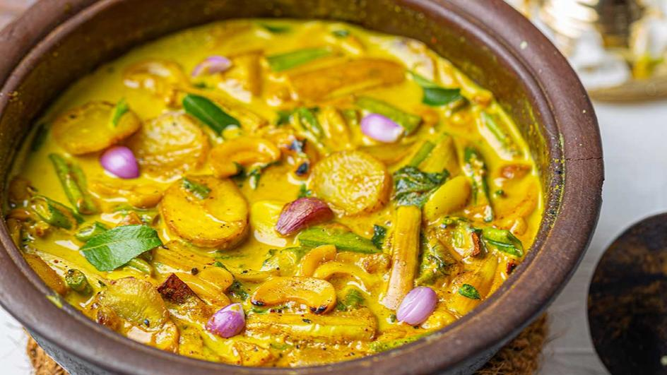

YUMMY DISHES
Hathmaluwa
INGREDIENTS(for 4 persons)
250 g. Brinjal
400 g. Wattakka Leaves
400 g. Sarana
300 g. Long beans
250 g. Sweet potato
200g. Cashew
100 oz. Kos Ata
half a cup of coconut milk
1/4 cup of coconut scraped
One tsp of mustard seeds
One tsp cumin seeds
Half a teaspoon of powdered turmeric
Half a teaspoon of red chili powder, or to taste

HOW TO COOK
chop vegetables. Hot oil should be used to
temper the mustard and cumin seeds in a large pan. Finely chopped onions,
green chilies, minced garlic, and grated ginger should then be sautéed until
golden brown. Add the chopped vegetables, stir in the red chili powder,
turmeric powder, and salt to taste. Cook until the vegetables are soft. Add
the coconut milk and the scraped coconut, then simmer for a further five to
seven minutes. Serve the Hathmaluwa hot, garnished with fresh coriander
leaves, and enjoy with steamed rice or bread for a delightful meal.
Contact us on hirankavindra@gmail.com